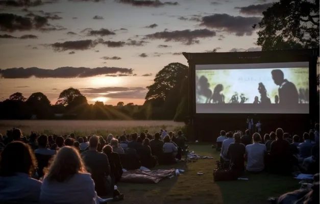

À propos
Historique
Un festival unique mêlant cinéma et amour des animaux
Le Festival Miaullywood a été créé en 2025 avec une vision simple : combiner la passion du cinéma avec la sensibilisation à la cause animale, tout en mettant en avant les chats, ces compagnons qui inspirent tendresse et fascination.
L’objectif du festival est de proposer un espace inclusif, immersif et ludique, où le cinéma devient un outil pour éduquer et divertir, tout en célébrant la beauté et la complexité du lien entre humains et animaux. Chaque édition met en lumière des réalisateurs émergents, des films engagés et des activités innovantes, le tout dans une ambiance conviviale et familiale
Équipe
Des passionnés à l’œuvre
Organisateurs :
L’équipe est dirigée par [Nom du directeur ou de l’association organisatrice], un groupe de passionnés de cinéma et de défense des droits des animaux.
Équipe technique :
Des experts en événementiel, des techniciens audiovisuels et des bénévoles engagés travaillent main dans la main pour garantir une expérience inoubliable. Partenaires : Avec le soutien d’associations de protection animale, de sponsors locaux et d’entreprises liées au cinéma, Miaullywood est porté par une véritable communautéComposée de passionnés de films et d'animaux, l'équipe du Festival Miaullywood s'engage à offrir une expérience unique. Nos bénévoles et organisateurs travaillent sans relâche pour réussir cet événement chaque année.

Charte
- Respect des animaux et du bien-être animal.
- Promotion des films mettant en avant les chats.
- Accessibilité pour tous les publics.